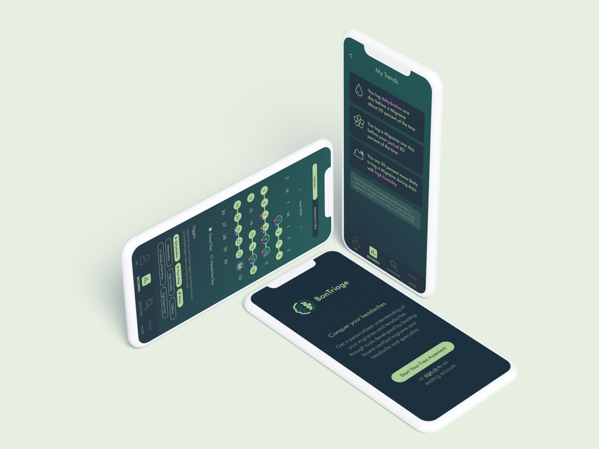
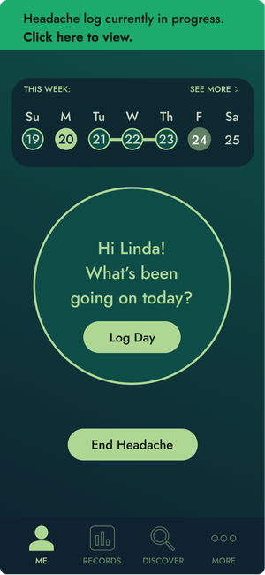
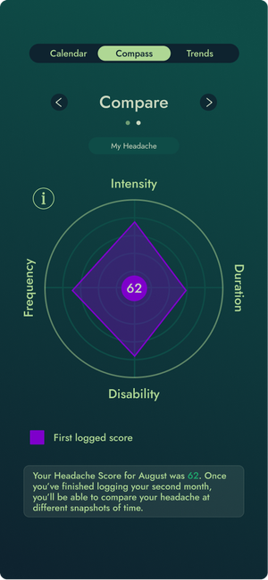
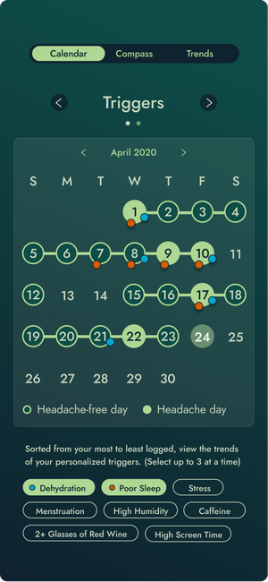
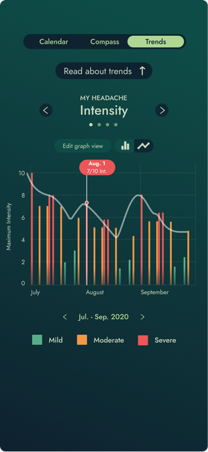
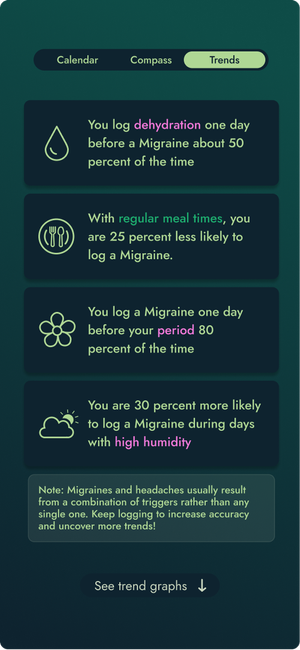
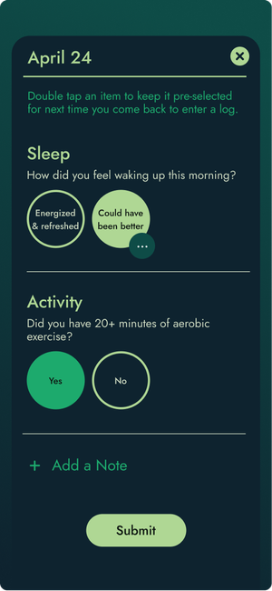

Migraine Mentor is a clinically-backed headache management app developed in collaboration with board-certified headache specialists and experts in artificial intelligence. Designed to support long-term management, it helps users track and manage chronic migraines by delivering personalized insights and supporting better patient-provider communication.
Featured in: MDEdge, Practical Neurology, VJNeurology
In the first five months of 2020, I co-designed and led UX research exploring how individuals with brain sensitivity — specifically those with traumatic brain injuries and chronic migraines — navigate overstimulating environments. Our four-person team conducted foundational research across both groups before narrowing our focus to chronic migraine sufferers. We synthesized key insights, developed functional prototypes, and conducted user testing with wireframes and Wizard-of-Oz prototypes to validate our data collection and visualization strategies.
Following this phase, I continued working with one teammate for an additional five months to apply our findings in redesigning and rebranding a clinically-developed app by Stanford Headache Specialist Robert P. Cowan, MD, FAAN, FAHS. We collaborated with doctors, AI specialists, and engineers to prepare the app for launch on iOS and Android.
Developed and tested with users to ensure accessibility, including a color palette tailored to reduce visual discomfort for individuals experiencing migraines.






Conducted needfinding and insight synthesis, followed by iterative design from low- to high-fidelity prototypes, and usability testing to validate key interactions and flows.
Exploring the Problem Space: Chronic Migraines
Lo- and Mid-Fi Iterating & Remote Usability